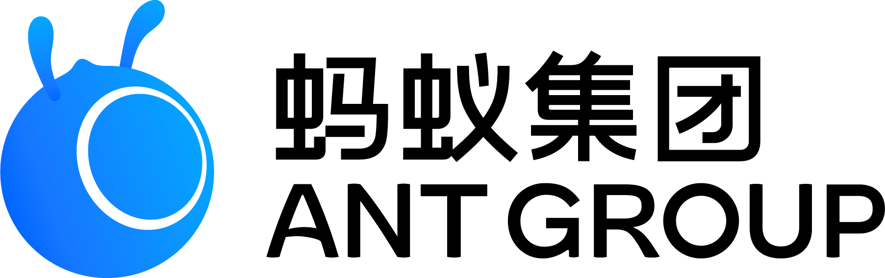

这不是“自动排版工具”，而是一套把想法转成演示表达的工作流。它把结构规划、文案收敛、视觉节奏和交付形态一起处理，让表达更快进入可上台状态。
Slide-Writer｜单文件 HTML 演讲生成 Skill
从问题定义，到生成逻辑，再到最终交付，形成一套完整的演讲生产线。
找模板、调版式、压字数、补结构、改标题，这些动作消耗的是注意力，而不是判断力。
表达者本来应该把时间留给目标澄清、立场建立和关键判断，但现实里常常被拖进页面级修修补补。结果不是做不出来，而是做出来以后仍然“不像一份正式演讲稿”。
这不是替代思考，而是把思考从繁琐的呈现工作中解放出来。
只需要给主题、判断、大纲、草稿、演讲稿或材料包。核心价值在于立场、目标、优先级和关键选择。
自动规划章节、拆页、压缩信息密度、统一风格、替换为组件化页面，并交付浏览器直接可放映的 HTML deck。
它优先生成判断式标题、短句支撑、卡片结构和章节节奏，避免“长文网页化”的假 PPT。
你保留内容控制权，系统承担结构、写作、优化和呈现这条长链路里的重复劳动。
PART 02
它先理解内容，再重构表达，最后才决定一页该长成什么样。
先判断模式、主题和内容密度，再开始写 slide，这决定了最终演讲稿是否专业。
结构、写作、优化、呈现同时在线，演讲稿才会显得完整。
好的演讲稿不是信息更多，
而是结构更清、表达更短、节奏更稳。
它尤其适合那些有判断、有材料、但还没有好表达的场景。
把它当成一位专门做“演示化重构”的搭档。你提供方向、受众和关键判断，它负责把内容推进到可展示、可复用、可继续编辑的状态。
您只需专注目标、观点与判断，Slide-Writer 负责结构、写作、优化与呈现。